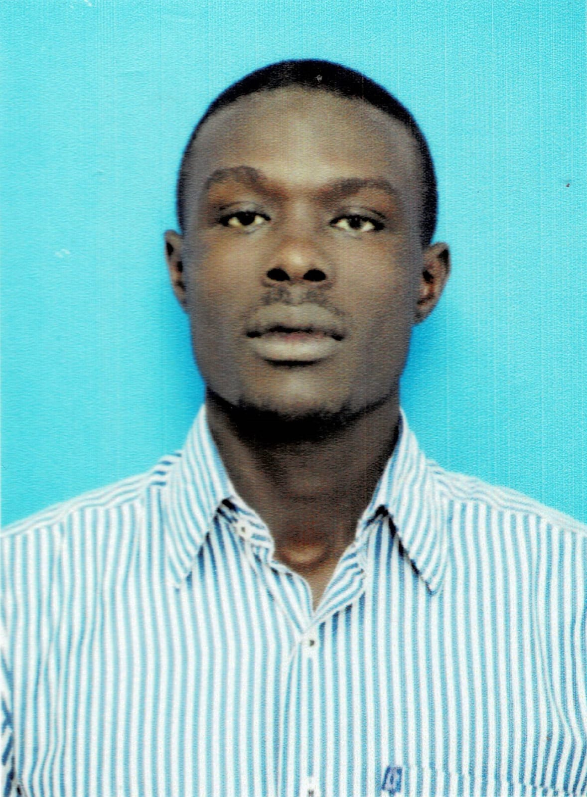

Resume
Personal Details
- Name: Fredrick Ndolo
- Date of Birth: 20/04/1994
- Nationality: Kenyan
- Phone Number: +254728115681
- Email: ndolofredrick2@gmail.com
- Postal Address: 254728115681-40222,
Oyugis- Kenya
Summary
Fredrick Ndolo is a team player, skill seeker, software engineer with a passion for learning and new challenges. I am constantly looking to grow and discover new possibilities through research and problem solving using technology
Education
- Bachelors of Business Information Technology: 2013 - 2017 - Meru University of Science & Technology
- Kenya Certificate of Secondary Education (KCSE):2008-2012 - St. Josephs School, Rapogi
- Kenya Certificate of Primary Education (KCPE):L 2007- St. Joseph's Combined Academy
Work Experience
- Software Developer: Caritas Homa Bay: From August 2021 - to date
- ICT Assistant Lecturer: Kiriri Women's University of Science & Technology:01/01/2020-12/12/2020
- .NET Software Developer: All In One Software East Africa: From 02/02 2019 - 31/12/2019
- .NET Software Developer: Octrinsic Technologies:01/01/2018-12/12/2019
Skills
- HTML
- CSS
- Javascript
- C#
- SQL
Awards
- Certificate of participation in the Provincial level technology exhibit (2011)
- First runners up in the District, for having the most creative system in technology exhibit (2011)
- First position in the Region (Migori County), for having the most creative system in technology exhibit (2011)